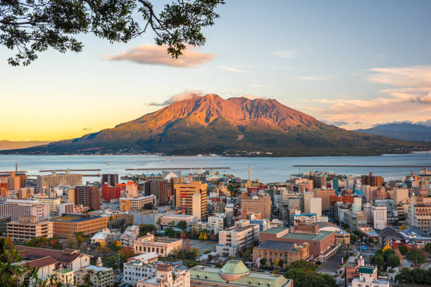

Kagoshima este un oraș cu priveliști spectaculoase ale Muntelui Sakurajima, un vulcan activ, și un centru cultural important al Japoniei.
Top 10 Atracții din Kagoshima:
- Vulcanul Sakurajima
- Grădina Senganen
- Parcul de Distracții Amu Plaza
- Castelul Kagoshima
- Muzeul de Artizanat Kagoshima
- Insula Yakushima
- Templul Iso
- Muzeul de Artă Kagoshima
- Parcul Shiroyama
- Grădina Teras